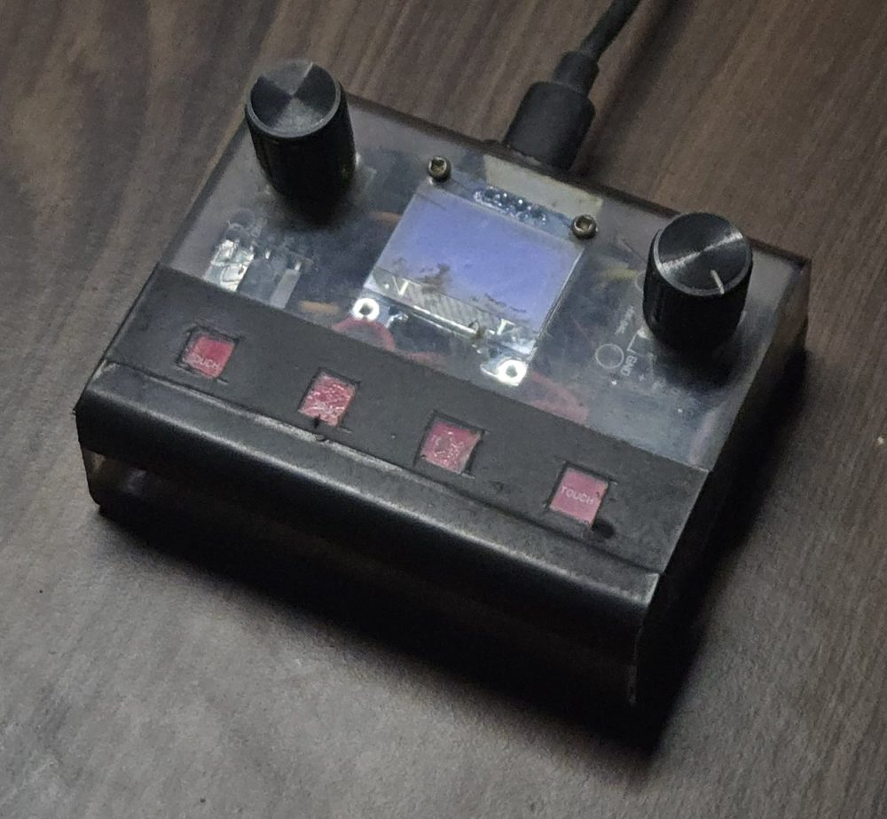
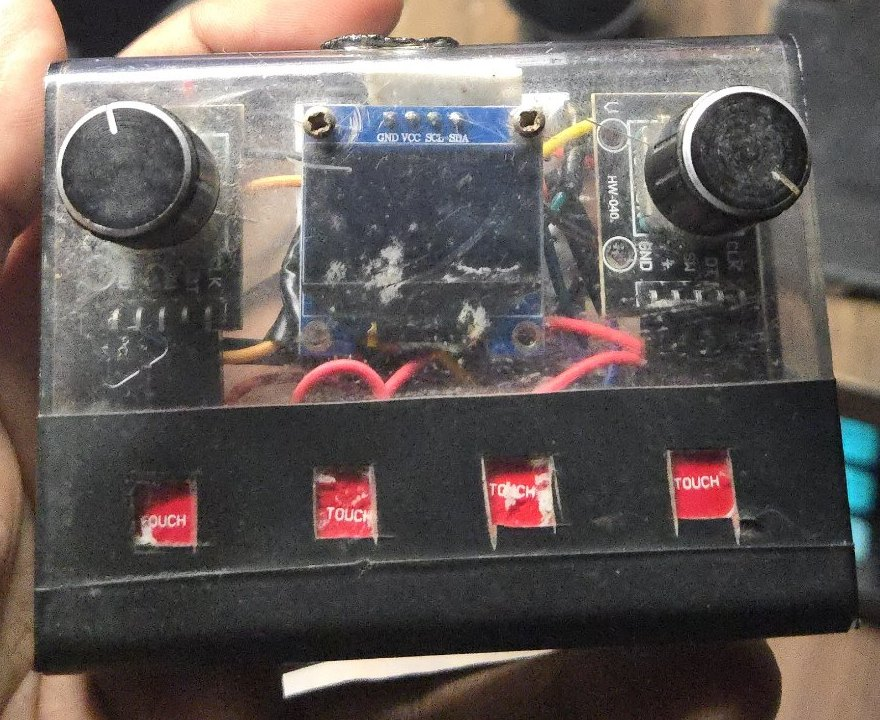

Hardware project · Wired
Macro Keyboard
A custom mini keyboard with a shortcut programmed to every key. It has two modes, Coding and Meeting, so the same keys and knobs do the right job for the task at hand.
2modes
4touch keys
2rotary knobs

Explore the hardware.
Hover over a dot, or tap it on your phone, to see what that part is and what it does in this build.

Pick a part
Select any numbered dot on the photo, or a part from the list below.
Two modes, one device.
Keys are numbered from the right: Key 1 is the right-most touch key and Key 4 is the left-most.
| Control | Coding mode | Meeting mode |
|---|---|---|
| Key 1 (right-most) | Copy | Mute / unmute mic |
| Key 2 | Paste | Speaker on / off |
| Key 3 | Bookmark | Close / open all windows |
| Key 4 (left-most) | Dummy key. Long press locks the computer | Dummy key |
| Left rotary | Scroll left and right | Dummy |
| Right rotary | Scroll up and down | Volume control |
Switching modes: hold the right-most touch key for more than 3 seconds. A “dummy” key is a spare key with no action assigned yet.